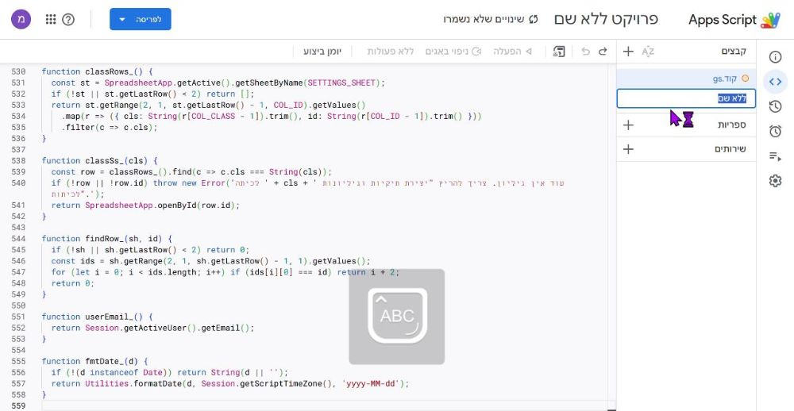
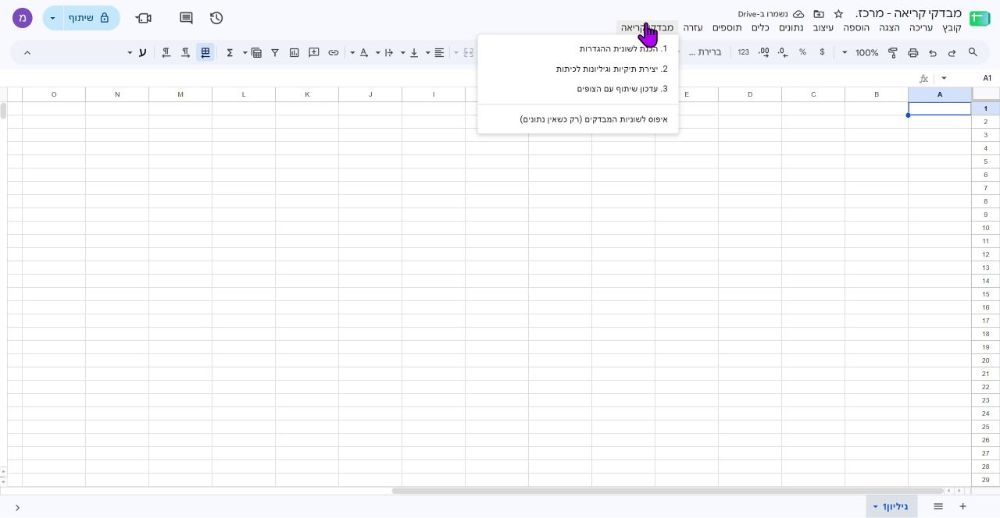
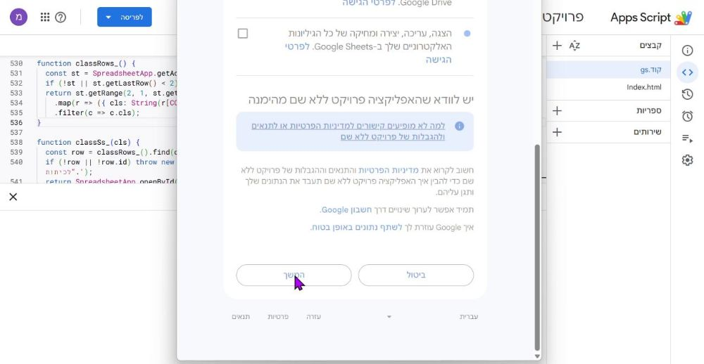
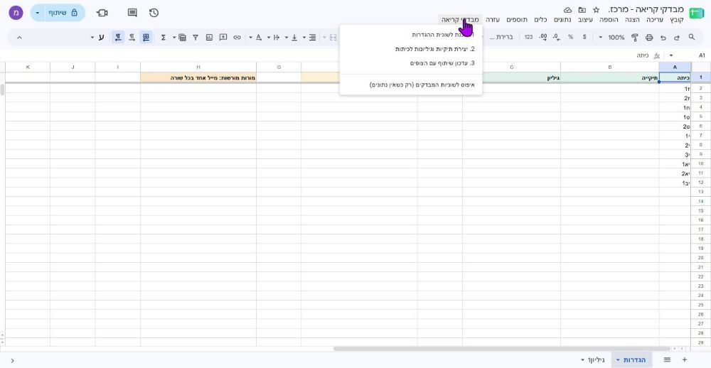
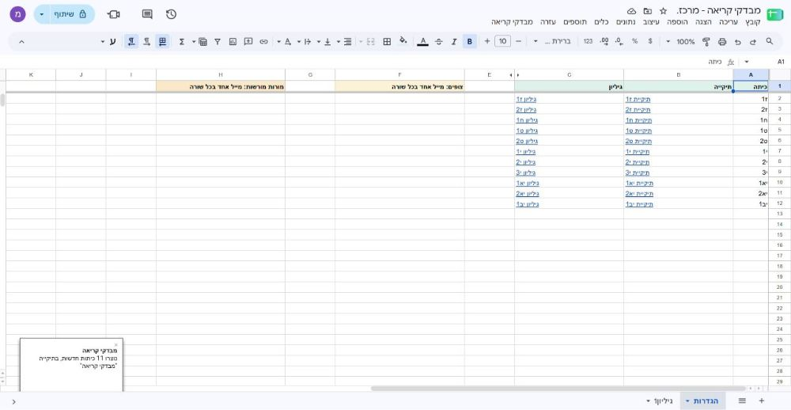
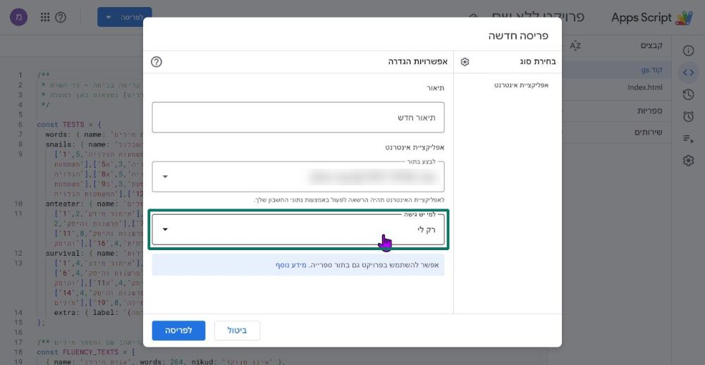

האפליקציה מאפשרת למורות להזין מבדקי קריאה מהנייד, והנתונים נשמרים בגיליון Google נפרד לכל כיתה. ההקמה נעשית פעם אחת, בידי רכזת או מנהלת.
זמן: כ-15 דקות
צריך: חשבון Google הארגוני של בית הספר
ידע בתכנות: לא צריך
לפני שמתחילים: מי שעוקבת אחרי המדריך יוצרת מערכת נפרדת משלה, עם תיקיות ונתונים משלה. מורות שרק מזינות נתונים לא צריכות לבנות כלום: הן מקבלות את הקישור ונכנסות לרשימת המורות המורשות.
1גיליון מרכזי
נכנסים ל-Google Drive עם החשבון הארגוני של בית הספר, לא עם Gmail פרטי. כל מה שייבנה, כולל נתוני התלמידים, יישמר בחשבון הזה.
חדש ← Google Sheets ← גיליון ריק.
נותנים לו שם, למשל: מבדקי קריאה - מרכז.
בגיליון הזה לא נשמרים נתוני תלמידים. הוא "חדר הבקרה": רשימת הכיתות, המורות והצופים.
2הדבקת הקוד
בגיליון: תוספים ← Apps Script. נפתחת לשונית חדשה עם עורך קוד.
בצד ימין יש קובץ בשם קוד.gs. לוחצים בתוך הקוד, Ctrl+A, ומוחקים הכול.
לוחצים על העתקת הקוד כאן למטה, חוזרים לעורך ומדביקים: Ctrl+V.
קוד.gs(החלק שמתקשר עם הגיליון)
ליד "קבצים" לוחצים + ← HTML, וקוראים לקובץ Index. בדיוק כך: I גדולה, בלי ".html".

אחרי הלחיצה על + ← HTML נפתחת שורה לשם הקובץ. כותבים בה Index ולוחצים Enter.
מוחקים את מה שבתוך הקובץ החדש, לוחצים על העתקת המסך ומדביקים.
Index.html(המסך שהמורה רואה)
שומרים: Ctrl+S.
לא חובה: לוחצים על "פרויקט ללא שם" למעלה, וקוראים לו "מבדקי קריאה".
בדיקה מהירה שההדבקה הצליחה: ב-Index השורה הראשונה היא <!doctype html>. אם הכפתור לא מעתיק, לוחצים בתוך התיבה, Ctrl+A ואז Ctrl+C.
3הכנת ההגדרות
חוזרים ללשונית של הגיליון ומרעננים את הדף (F5). בשורת התפריטים מופיע תפריט חדש: "מבדקי קריאה".
בוחרים בו 1. הכנת לשונית ההגדרות.

התפריט "מבדקי קריאה" מופיע ליד "עזרה". במסך צר הוא עלול להסתתר בקצה שורת התפריטים.
אישור הרשאות, רק בפעם הראשונה: נפתח חלון של Google. בוחרים את החשבון של בית הספר. אם מופיע "Google hasn't verified this app": Advanced ← Go to....
חשוב מאוד: בחלון ההרשאות יש תיבות סימון ליד כל הרשאה (Drive, Sheets ועוד). מסמנים את כולן, או את "בחירת הכול" למעלה, ורק אז המשך. בלי הסימון האפליקציה לא תוכל ליצור תיקיות ולשמור נתונים.

כאן התיבות עוד ריקות. צריך לסמן אותן לפני "המשך".
אחרי האישור בוחרים שוב 1. הכנת לשונית ההגדרות. נוצרת לשונית "הגדרות". ממלאים שלוש עמודות:

הלשונית "הגדרות" אחרי ההכנה. העמודות "תיקייה" ו"גיליון" יתמלאו לבד בשלב הבא.
עמודה A כיתות. מופיעות ז1 עד יב1. משנים לפי בית הספר, כיתה אחת בכל שורה.
עמודה F צופים. מיילים של מי שתראה את כל הנתונים, בצפייה בלבד.
עמודה H מורות מורשות. מי שמזינה נתונים. מי שלא ברשימה לא תיכנס.
מי שיצרה את הגיליון מורשית תמיד, גם בלי להופיע ברשימה. כדאי לכתוב את המיילים כטקסט רגיל: אם גוגל הופכת מייל ל"צ'יפ" עם שם, לוחצים Esc לפני Enter. אם התפריט לא מופיע: בעורך הקוד בוחרים setup ברשימה שליד "יומן ביצוע", ולוחצים הפעלה ▷.
4יצירת התיקיות
בתפריט "מבדקי קריאה" בוחרים 2. יצירת תיקיות וגיליונות לכיתות, ומחכים דקה או שתיים.
בסיום, בלשונית "הגדרות", ליד כל כיתה מופיעים קישור לתיקייה וקישור לגיליון. ב-Drive נוצרה תיקייה בשם "מבדקי קריאה", והצופים קיבלו גישה אליה.

ככה זה נראה בסיום: קישור לתיקייה ולגיליון ליד כל כיתה, והודעה בפינה ש"נוצרו 11 כיתות חדשות".
אם התפריט לא מופיע, אפשר להריץ את אותה פעולה מהעורך: בוחרים createClassFolders ולוחצים הפעלה ▷.
5פרסום האפליקציה
בעורך: הכפתור הכחול לפריסה ← פריסה חדשה.
ליד "בחירת סוג": גלגל שיניים ⚙ ← אפליקציית אינטרנט.
ממלאים: לבצע בתור: עצמי (המייל שלך). למי יש גישה: האפשרות שמתחילה ב"לכל מי שבדומיין", ואחריה שם הארגון (למשל "משרד החינוך - מחוז מרכז").
שימו לב: ברירת המחדל ב"למי יש גישה" היא "רק לי". אם לא משנים, אף מורה לא תוכל להיכנס. פותחים את הרשימה ובוחרים "לכל מי שבדומיין...". לא לבחור "כל מי שיש לו חשבון Google" או "כולם".
למה רשימת המורות חשובה: "כל מי שבדומיין" יכול להיות ארגון גדול מאוד, למשל כל עובדי המחוז. מי שיש לו את הקישור ולא מופיע בעמודה H יקבל "אין הרשאה", ולכן חשוב למלא את הרשימה.

חלון הפריסה. השדה המסומן במסגרת הוא זה שצריך לשנות מ"רק לי" ל"לכל מי שבדומיין...".
פריסה, ומעתיקים את הקישור שמסתיים ב-/exec. זה הקישור שנשלח למורות.
אם "כל מי שבארגון" לא מופיע, או שמורות מקבלות הודעת חסימה, כנראה שמנהל המערכת של בית הספר חוסם אפליקציות כאלה. צריך לפנות אליו.
6בדיקה
פותחים את הקישור ומזינים תלמיד ניסיון אחד במבדק טקסט, ואחד ב"רשימת מילים".
ב"ההזנות שלי" פותחים את שניהם לעריכה, ובודקים שהכול חזר כמו שהוזן.
בודקים שהשורות נכנסו לגיליון של הכיתה, ומוחקים את שורות הניסיון.
מבקשים ממורה מהרשימה להיכנס, ומאדם שלא ברשימה לנסות. הראשונה צריכה להיכנס, והשני צריך לקבל "אין הרשאה".
7שימוש שוטף
הוספת מורה: כותבים את המייל שלה בעמודה H. זה חל מיד.
הוספת צופה: מייל בעמודה F, ואז בתפריט 3. עדכון שיתוף עם הצופים.
הוספת כיתה: כותבים אותה בעמודה A, ומריצים שוב את "יצירת תיקיות וגיליונות". כיתות קיימות לא משתנות.
עדכון קוד: מדביקים את הקבצים החדשים, שומרים, ואז לפריסה ← ניהול פריסות ← עיפרון ✏️ ← גרסה: גרסה חדשה ← פריסה. כך הקישור נשאר אותו קישור.
לא לגעת: בעמודה D המוסתרת בלשונית "הגדרות", ובשמות הלשוניות בגיליונות הכיתות. פרטיות: מזינים מספרי תלמידים בלבד. את הטבלה שמקשרת מספר לשם לא שומרים באף אחד מהגיליונות.
🔒אבטחה ופרטיות
מובנה באפליקציה
רשימת מורות מורשות: מי שלא ברשימה לא נכנסת, גם עם קישור ומייל ארגוני.
כל מורה רואה ועורכת רק את ההזנות שלה. השרת בודק את זה בכל פעולה, לא רק המסך.
בדיקת קלט: כל הזנה נבדקת לפני השמירה. בחירות חייבות להיות מהרשימה, מספרים בטווח סביר, ונוסחאות או קוד בשדות טקסט מנוטרלים.
אין דריסה: שתי מורות ששומרות באותו רגע לא מוחקות אחת את השנייה.
באחריותך
הקישור: שולחים רק בקבוצה סגורה של המורות. לא בקבוצה עם תלמידים או הורים, ולא מפרסמים.
רשימת המורות: מורה שעוזבת, מוחקים את המייל שלה מעמודה H.
שמות: מזינים מספרי תלמידים בלבד, ואת טבלת השמות שומרים בנפרד.
הגישה: בפריסה בוחרים רק "לכל מי שבדומיין", אף פעם לא "כולם".
רעיונות לכלים נוספים
אותו מנגנון מתאים להרבה יותר ממבדקי קריאה. בכל כלי כזה המורה מקבלת טופס נוח בנייד, עם כפתורים גדולים במקום תאים באקסל. הנתונים נשמרים אוטומטית בגיליון של הכיתה, החישובים נעשים לבד, וכל מורה רואה רק את מה שהיא הזינה.
לשימוש אישי אפליקציה פרטית למורה אחת. כלי שרק את משתמשת בו, למשל מעקב אחרי הכיתה שלך. בפריסה בוחרים "למי יש גישה: רק לי", ואין צורך ברשימת מורות.
לצוות אפליקציה משותפת לכמה מורות. כמו מבדקי הקריאה. בפריסה בוחרים "לכל מי שבדומיין", וממלאים את רשימת המורות המורשות.
מה אפשר לבנות
הערכה ומבדקים
עובדות יסוד בחשבון: רשת תרגילים, "ידע / לא ידע", וסיכום של מה עוד לא נשלט.
מבדק כתיבה: מחוון עם רמות לכל ממד (תוכן, מבנה, לשון, כתיב), וציון מחושב.
שטף קריאה באנגלית: אותו מבנה, עם טקסטים באנגלית.
מבחן בעל פה או הצגת פרויקט: ניקוד לפי מחוון בזמן שהתלמיד מציג.
מעקב התנהגות יומי: כמה לחיצות בסוף שיעור, ותמונה שבועית לכל תלמיד.
תצפית עמיתים: צפייה בשיעור לפי מחוון מוסכם.
נוכחות והגעה בזמן: מהנייד, בכניסה לכיתה.
ליווי אישי
שיחות אישיות: נושא, סיכום והמשך טיפול.
מעקב אחר תוכנית אישית (תל"א): מטרות, התקדמות והערות לאורך השנה.
קשר עם הורים: מתי, איך ועל מה.
ניהול כיתה ובית ספר
השאלת ציוד וספרים: מי לקח, מתי, והאם החזיר.
הזמנת חדרים או ציוד משותף: בלי כפילויות.
משוב תלמידים: כמה שאלות קצרות בסוף שיעור או יחידה.
בונים רק בחשבון הארגוני של בית הספר, לא בחשבון Gmail פרטי.
פרטיות: נתוני התלמידים נשארים בתוך מערכת בית הספר, ולא בחשבון אישי.
הגבלת גישה: רק משתמשים מהארגון יכולים להיכנס, ומי שמבחוץ נחסם.
המשכיות: הכלי והנתונים שייכים לבית הספר, ולא נעלמים כשמורה עוזבת או מחליפה חשבון.
מה משותף לכולם
מתחילים מטופס שכבר קיים, באקסל, ב-Word או על נייר.
בונים בחשבון הארגוני בלבד, כמו שמוסבר למעלה.
לא צריך לדעת לתכנת. מספיק לתאר מה רוצים לתעד, ומה רוצים לקבל בחזרה.
חושבים קודם על הסוף: סיכום כיתתי, מעקב לאורך זמן, או רשימת תלמידים לתשומת לב. זה קובע מה צריך להזין.
דוגמה: איך לבקש
את הבקשה כותבים לכלי בינה מלאכותית, ומצרפים את הטופס הקיים. אפשר להעתיק ולשנות:
אני מורה לחשבון בכיתה ג'. אני רוצה אפליקציה ב-Google Apps Script, בחשבון Google הארגוני של בית הספר, לתיעוד מבדק עובדות יסוד בכפל.
מה אני מזינה: כיתה, מספר תלמיד, תאריך, ולכל תרגיל מ-2×2 עד 10×10: ידע או לא ידע.
מה אני רוצה לקבל: כמה תרגילים כל תלמיד ידע, ואילו תרגילים רוב הכיתה עוד לא יודעת.
חשוב לי: שזה יעבוד טוב בטלפון, שכל מורה תראה רק את מה שהיא הזינה, ושהנתונים יישמרו בגיליון נפרד לכל כיתה.
חשוב לי גם שתהיה רשימה של מי מורשה להיכנס, ושהקוד יבדוק כל הזנה לפני השמירה.
מצורף הטופס הריק שאני משתמשת בו היום.
הכי חשוב בבקשה: מה מזינים, מה רוצים לקבל בחזרה, ומי רואה מה. לכלי פרטי כותבים "רק אני אשתמש בזה", ואז הבקשה פשוטה יותר. כדאי לבקש לראות תצוגה מקדימה לפני שמתקינים. לא מצרפים לכלי הבינה המלאכותית נתונים אמיתיים של תלמידים, רק את הטופס הריק.
הצטרפות לקהילת "כלים ואסטרטגיות מפתחות להצלחה"
קהילה של אנשי ונשות חינוך, שמשתפים כלים פדגוגיים וטכנו-פדגוגיים ומחליפים רעיונות.